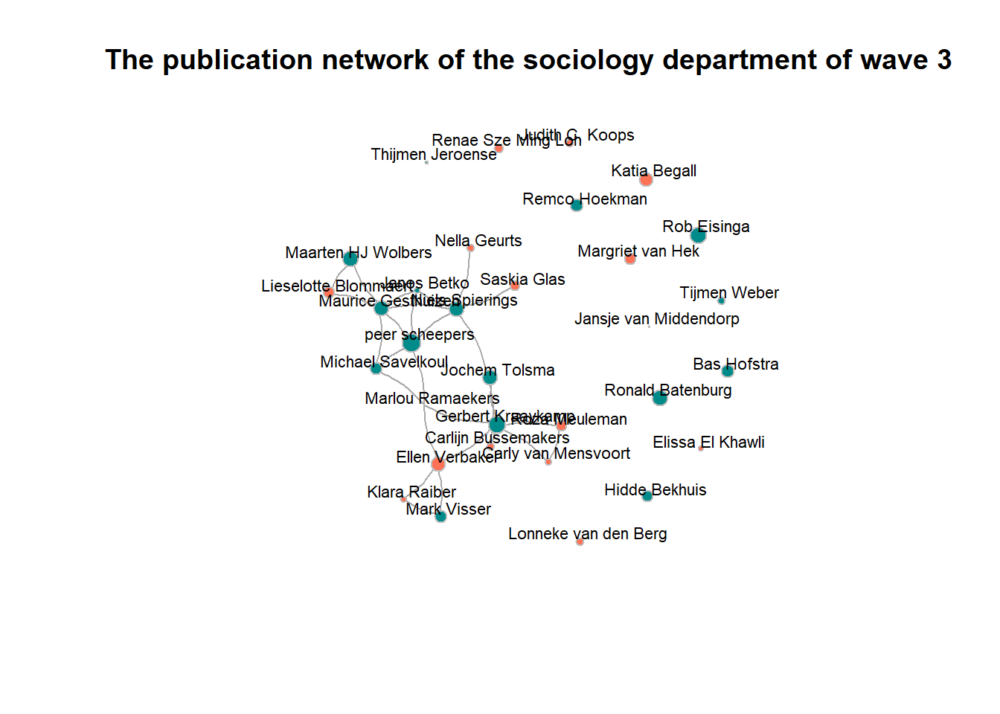
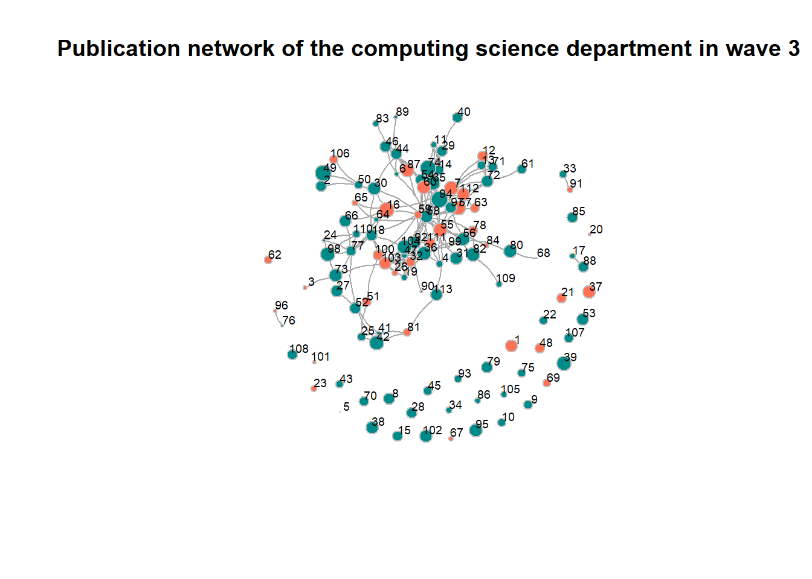

Descriptives
Daphne Janssen
Last compiled on 2022-11-01 10:12:02
1 Descriptives Computing science staff RU
1.1 Descriptives variables dataset
# start with clean workspace
rm(list = ls())
getwd()#> [1] "C:/Users/Daphn/Documenten/labjournal"# loading packages
library(tidyverse)# loading data
load("C:\\Users\\Daphn\\Documenten\\pubnets\\data\\names_df2_v20220106.RData")
load("C:\\Users\\Daphn\\Documenten\\pubnets\\data\\names_df_publications_v20221006.RData")# selecting the sociology sample
# Some gs_id's were deselected (just by eye-balling) because the data scrape was not correct
deselect <- c(24, 25, 34, 35)
names_df %>%
filter(affiliation == "Radboud University") %>%
filter(field == "sociology") %>%
filter(!(id %in% deselect)) -> soc_df
names_df_publications %>%
filter(gs_id %in% soc_df$gs_id) -> socpub_df
soc_df %>%
select(c("gs_id", "lastname")) %>%
right_join(socpub_df) -> socpub_df
rm(names_df)
rm(names_df_publications)
rm(deselect)# Cleaning the names a bit
soc_df$lastname_pubs <- as.character(str_split(soc_df$lastname, pattern = ",", n = 2, simplify = TRUE)[,
1])
socpub_df$author <- tolower(socpub_df$author)# Saving the data in a descriptives folder
save(soc_df, file = "C:\\Users\\Daphn\\Documenten\\labjournal\\data\\descriptives\\soc_df.RData")
save(socpub_df, file = "C:\\Users\\Daphn\\Documenten\\labjournal\\data\\descriptives\\socpub_df.RData")# Adding value labels to the variable 'dutch'
soc_df$dutch <- factor(soc_df$dutch, levels = c(0, 1), labels = c("non-dutch", "dutch"))# Frequencies of the variables 'dutch' and 'gender'
table(soc_df$gender)#>
#> female male
#> 16 16table(soc_df$dutch)#>
#> non-dutch dutch
#> 5 27Frequencies: The frequencies of the gender variable show that the male/female distribution within the sociology department is equal. In contrast, the distribution between people of Dutch and non-Dutch origin is much less equal within the sociology department: only 15.6 percent of staff are of non-Dutch origin, compared to 84.4 percent who are of Dutch origin.
# Visualisation of the gendercomposition of the three waves
library(ggplot2)
ggplot(soc_df, aes(factor(gender), fill = factor(gender))) + geom_bar() + ggtitle("The gender composition of the sociology department in 2022")Bar chart of the gender composition: this bar chart graphically depicts the equal gender distribution within the sociology department.
# Visualisation of the ethnicitycomposition of the three waves
library(ggplot2)
socbar <- ggplot2:::ggplot(soc_df, aes(factor(dutch), fill = factor(dutch))) + geom_bar() + ggtitle("The ethnicity composition of the sociology department in 2022")
socbar + scale_fill_manual(values = c("#619CFF", "#00BA38"))Bar chart of the ethnicity composition: this bar chart graphically shows the unequal distribution of having or not having Dutch ancestry within the sociology department.
1.2 Array
1.2.1 Creating an array
# start with clean workspace
rm(list = ls())
getwd()#> [1] "C:/Users/Daphn/Documenten/labjournal"# loading packages
library(data.table)
library(tidyverse)
require(stringi)
require(RSiena)# loading data
load("C:\\Users\\Daphn\\Documenten\\labjournal\\data\\descriptives\\soc_df.RData")
load("C:\\Users\\Daphn\\Documenten\\labjournal\\data\\descriptives\\socpub_df.RData")# Network based on publications
network2016_2017 <- matrix(NA, nrow = nrow(soc_df), ncol = nrow(soc_df))
network2018_2019 <- matrix(NA, nrow = nrow(soc_df), ncol = nrow(soc_df))
network2020_2022 <- matrix(NA, nrow = nrow(soc_df), ncol = nrow(soc_df))# select publications of the corresponding time era
pubs_sel <- socpub_df %>%
filter(year >= 2016 & year <= 2017)
# fill the matrix
for (ego in 1:nrow(soc_df)) {
name_ego <- soc_df$lastname_pubs[ego] #which ego?
pubs_sel2 <- pubs_sel[pubs_sel$gs_id == soc_df$gs_id[ego], ] #selecteer de publicaties van ego
for (alter in 1:nrow(soc_df)) {
name_alter <- soc_df$last_name[alter] #which alter?
network2016_2017[ego, alter] <- as.numeric(sum(str_detect(pubs_sel2$author, name_alter)) > 1) #did alter publish with ego
}
}# select publications of the corresponding time era
pubs_sel <- socpub_df %>%
filter(year >= 2018 & year <= 2019)
# fill the matrix
for (ego in 1:nrow(soc_df)) {
name_ego <- soc_df$lastname_pubs[ego] #which ego?
pubs_sel2 <- pubs_sel[pubs_sel$gs_id == soc_df$gs_id[ego], ] #selecteer de publicaties van ego
for (alter in 1:nrow(soc_df)) {
name_alter <- soc_df$last_name[alter] #which alter?
network2018_2019[ego, alter] <- as.numeric(sum(str_detect(pubs_sel2$author, name_alter)) > 1) #did alter publish with ego
}
}# select publications of the corresponding time era
pubs_sel <- socpub_df %>%
filter(year >= 2020 & year <= 2022)
# fill the matrix
for (ego in 1:nrow(soc_df)) {
name_ego <- soc_df$lastname_pubs[ego] #which ego?
pubs_sel2 <- pubs_sel[pubs_sel$gs_id == soc_df$gs_id[ego], ] #selecteer de publicaties van ego
for (alter in 1:nrow(soc_df)) {
name_alter <- soc_df$last_name[alter] #which alter?
network2020_2022[ego, alter] <- as.numeric(sum(str_detect(pubs_sel2$author, name_alter)) > 1) #did alter publish with ego
}
}# Putting all adjacency matrices in an array
net_soc_array <- array(data = c(network2016_2017, network2018_2019, network2020_2022), dim = c(dim(network2020_2022),
3))# Saving the array
save(net_soc_array, file = "C:\\Users\\Daphn\\Documenten\\labjournal\\data\\descriptives\\soc_net_array.RData")1.2.2 Descriptives based on array
# Start with a clean workspace
rm(list = ls())
getwd()#> [1] "C:/Users/Daphn/Documenten/labjournal"# Loading packages
library(data.table)
library(tidyverse)
require(stringi)
require(RSiena)
require(igraph)# Loading dataobjects
load("C:\\Users\\Daphn\\Documenten\\labjournal\\data\\descriptives\\soc_net_array.RData")
load("C:\\Users\\Daphn\\Documenten\\labjournal\\data\\descriptives\\soc_df.RData")# Correcting for publications which are not present for both authors and displaying the degree
# distribution of of the sociology department's publication network in a histogram.
net1 <- net_soc_array[, , 1]
net1 <- net1 + t(net1)
net1[net1 == 2] <- 1
diag(net1) <- 0
degree <- rowSums(net1)
hist(degree, main = "The degree distribution of the sociology department in wave 1")net2 <- net_soc_array[, , 2]
net2 <- net2 + t(net2)
net2[net2 == 2] <- 1
diag(net2) <- 0
degree <- rowSums(net2)
hist(degree, , main = "The degree distribution of the sociology department in wave 2")net3 <- net_soc_array[, , 3]
net3 <- net3 + t(net3)
net3[net3 == 2] <- 1
diag(net3) <- 0
degree <- rowSums(net3)
hist(degree, main = "The degree distribution of the sociology department in wave 3")Histograms of the degree distributions: Comparing the histograms with the degree distribution for of the sociology department for all three waves, it appears that the degree distribution becomes less skewed over time. Whereas in wave 1 one individual still has six to seven ties and about 20 indivdiuals have zero to one tie, the largest amount of ties someone has in wave 2 is five to six and some people in wave 2 have four to five ties. In wave 3, fewer people have zero to one tie and the amount of people with two to six ties has increased.In general, the distribution of number of ties becomes more proportional over the years.
1.3 Plots
1.3.1 Creating the plots
# Creating graphs from adjacency matrices
net1_g <- igraph::graph_from_adjacency_matrix(net1, mode = c("undirected"))
net2_g <- igraph::graph_from_adjacency_matrix(net2, mode = c("undirected"))
net3_g <- igraph::graph_from_adjacency_matrix(net3, mode = c("undirected"))
# Putting the information of net1_g, net2_g and net3_g into a dataframe
in_network <- data.frame(as_ids(V(net1_g)))
in_network <- data.frame(as_ids(V(net2_g)))
in_network <- data.frame(as_ids(V(net3_g)))# Adding the names and citation data to in_network Giving the first column the name 'number'
names(in_network)[1] <- "number"
# Creating the object 'ru_nodes' with the names and total cites of the sociology staffmembers
ru_nodes <- soc_df[, c("name", "total_cites")]
# Adding a new variable to the dataset ru_nodes, called 'number' representing the numbers of the
# nodes
ru_nodes$number <- c(1:32)
# Combining in_network with ru_nodes, based on the numbers of the nodes, to eventually sow the
# names of the computing science staff
in_network <- left_join(in_network, ru_nodes, by = c(number = "number"))
# in_network$vcol <- ifelse(is.na(in_network$total_cites), '#E69F00', '#56B4E9')# Defining the color of the nodes by gender
soc_df$gcol <- ifelse(soc_df$gender == "male", "cyan4", "coral1")
# Adapting the node size to the number of citations
in_network$total_cites <- as.numeric(in_network$total_cites)# Plotting the network of wave 1
plot(net1_g, vertex.color = soc_df$gcol, vertex.label = soc_df$name, vertex.size = ifelse(!is.na(in_network$total_cites),
log(in_network$total_cites), 2), vertex.frame.color = "gray", vertex.label.color = "black", vertex.label.family = "Helvetica",
vertex.label.cex = 0.7, vertex.label.dist = 0.8, edge.curved = 0.2, edge.arrow.size = 0.5)
title("The publication network of the sociology department of wave 1", cex.main = 1.2, col.main = "black",
family.main = "Helvetica")igraph::degree(net1_g)#> [1] 0 0 0 0 0 0 4 0 0 0 1 0 0 7 2 1 2 0 3 2 3 4 0 0 0 0 0 0 0 1 0 0igraph::dyad.census(net1_g)#> $mut
#> [1] 15
#>
#> $asym
#> [1] 0
#>
#> $null
#> [1] 481igraph::triad.census(net1_g)#> [1] 4546 0 384 0 0 0 0 0 0 0 24 0 0 0 0 6# igraph::edge_density(net1_g) (will be evaluated later on)
sum(igraph::degree(net1_g))#> [1] 301.3.2 Wave 1: interpreting the plot and the descriptives
Plot: The plot shows that in wave 1, there were few people who had published with each other. Moreover, the vast majority of publucation ties consisted between men. In 2016 and 2017, only two women had ties with each other compared to 11 ties men had with each other. However, it is important to bear in mind here that most of the members of the sociology department in 2022 did not yet belong to the department in 2016 or 2017. This makes it logical that the amount of ties these people had with each other in 2016 and 2017 is small. Furthermore, the network plot shows that men were cited by far the most often in wave 1.
Descriptives: The interpretation of the plot already shows that the difference in degree between the nodes in the publication network of the sociology department of wave 1 is large: one person has by far the most ties while there are also many persons with no ties. Moreover, in terms of dyad census, there are only 15 dyads who have ties, and 481 dyads who have no ties. Regarding the results for the triad census, wave 1 shows 4546 empty triads present, 384 triads present with a connection between two nodes, 24 situations where two nodes have a connection with the same third node but not with each other and six complete triads.
# Plotting the network of wave 2
plot(net2_g, vertex.color = soc_df$gcol, vertex.label = soc_df$name, vertex.size = ifelse(!is.na(in_network$total_cites),
log(in_network$total_cites), 2), vertex.frame.color = "gray", vertex.label.color = "black", vertex.label.family = "Helvetica",
vertex.label.cex = 0.7, vertex.label.dist = 0.8, edge.curved = 0.2, edge.arrow.size = 0.5)
title("The publication network of the sociology department of wave 2", cex.main = 1.2, col.main = "black",
family.main = "Helvetica")igraph::degree(net2_g)#> [1] 1 0 0 0 2 0 5 0 2 1 0 0 0 6 1 1 5 2 1 0 4 3 0 0 0 0 0 0 0 0 0 0igraph::dyad.census(net2_g)#> $mut
#> [1] 17
#>
#> $asym
#> [1] 0
#>
#> $null
#> [1] 479igraph::triad.census(net2_g)#> [1] 4492 0 431 0 0 0 0 0 0 0 32 0 0 0 0 5# igraph::edge_density(net2_g) (will be evaluated later on)
sum(igraph::degree(net2_g))#> [1] 341.3.3 Wave 2: interpreting the plot and the descriptives
Plot: The network plot of wave 2 shows that already some more individuals belonging to the sociology department in 2022 have published with each other in 2018 and 2019. However, the degree of gender segregation seems to have remained almost the same; as many men have a tie with each other in wave 1 as in wave 2, but women no longer have any ties with each other. Furthermore, it appears that men are still predominantly cited most often in wave 2.
Descriptives: The degree of the network of wave 2 seems to have become slightly more evenly distributed: there are no longer any nodes with more than six ties, although there are still many nodes with no ties at all. This is also very subtly reflected in the dyad census values: in wave 2, 17 dyads have a tie and 479 dyads have no tie. Furthermore, in wave 2 there are fewer empty triads, more triads with a connection between two nodes, more situations where two nodes have a connection with the same third node but not with each other, but fewer complete triads than in wave 1.
# Plotting the network of wave 3
plot(net3_g, vertex.color = soc_df$gcol, vertex.label = soc_df$name, vertex.size = ifelse(!is.na(in_network$total_cites),
log(in_network$total_cites), 2), vertex.frame.color = "gray", vertex.label.color = "black", vertex.label.family = "Helvetica",
vertex.label.cex = 0.7, vertex.label.dist = 0.8, edge.curved = 0.2, edge.arrow.size = 0.5)
title("The publication network of the sociology department of wave 3", cex.main = 1.2, col.main = "black",
family.main = "Helvetica")
igraph::degree(net3_g)#> [1] 0 0 0 0 2 0 6 1 1 0 0 0 0 6 2 3 5 6 3 4 2 2 2 0 0 2 2 4 3 0 0 0igraph::dyad.census(net3_g)#> $mut
#> [1] 28
#>
#> $asym
#> [1] 0
#>
#> $null
#> [1] 468igraph::triad.census(net3_g)#> [1] 4192 0 707 0 0 0 0 0 0 0 50 0 0 0 0 11# igraph::edge_density(net3_g) (will be evaluated later on)
sum(igraph::degree(net3_g))#> [1] 561.3.4 Wave 3: interpreting the plot and the descriptives
Plot: The network plot shows that gender segregation has changed slightly in wave 3 compared to wave 2. Men and women appear to have started publishing more with each other and some publication links between women now exist again. However, the amount of publication ties between men has remained unchanged. Furthermore, women are slowly catching up in terms of number of citations, but men are still well ahead.
Descriptives: In wave 3, the degree is even more fairly distributed than in wave 2. More people now have at least one or two ties, and several now have six ties. The dyad census is in line with this finding: there are now 28 dyads with publication ties and still 468 dyads without publication ties. Moreover, in wave 3 there are again fewer empty triads, more triads with a connection between two nodes, more situations where two nodes have a connection with the same third node but not with each other, and also more complete triads than in wave 1 and wave 2.
1.3.5 Other descriptives based on plot
# number of nodes.
vcount(net1_g)#> [1] 32vcount(net2_g)#> [1] 32vcount(net3_g)#> [1] 32Number of nodes: All networks consist of 32 nodes, or individuals.
# number of edges
ecount(net1_g)#> [1] 15ecount(net2_g)#> [1] 17ecount(net3_g)#> [1] 28Number of edges: The number of edges increases for each wave.
# transitivity
transitivity(net1_g, type = c("localundirected"), isolates = c("NaN", "zero"))#> [1] NaN NaN NaN NaN NaN NaN 0.5000000 NaN NaN
#> [10] NaN NaN NaN NaN 0.2380952 1.0000000 NaN 0.0000000 NaN
#> [19] 0.3333333 1.0000000 1.0000000 0.6666667 NaN NaN NaN NaN NaN
#> [28] NaN NaN NaN NaN NaNtransitivity(net2_g, type = c("localundirected"), isolates = c("NaN", "zero"))#> [1] NaN NaN NaN NaN 1.00000000 NaN 0.40000000 NaN
#> [9] 1.00000000 NaN NaN NaN NaN 0.06666667 NaN NaN
#> [17] 0.20000000 1.00000000 NaN NaN 0.50000000 0.66666667 NaN NaN
#> [25] NaN NaN NaN NaN NaN NaN NaN NaNtransitivity(net3_g, type = c("localundirected"), isolates = c("NaN", "zero"))#> [1] NaN NaN NaN NaN 1.0000000 NaN 0.3333333 NaN NaN
#> [10] NaN NaN NaN NaN 0.2000000 1.0000000 0.6666667 0.5000000 0.2000000
#> [19] 0.3333333 0.3333333 1.0000000 1.0000000 1.0000000 NaN NaN 1.0000000 1.0000000
#> [28] 0.3333333 1.0000000 NaN NaN NaNTransitivity: The number of nodes with a (high) transitivity index increases for each wave. This means that for each wave, the number of nodes with transitive triads, relative to the possible number of nodes with transitive triads, increases.
# betweenness
igraph::betweenness(net1_g, directed = FALSE)#> [1] 0.0 0.0 0.0 0.0 0.0 0.0 9.0 0.0 0.0 0.0 0.0 0.0 0.0 27.5 0.0 0.0 9.0 0.0 16.0
#> [20] 0.0 0.0 4.5 0.0 0.0 0.0 0.0 0.0 0.0 0.0 0.0 0.0 0.0igraph::betweenness(net2_g, directed = FALSE)#> [1] 0.0 0.0 0.0 0.0 0.0 0.0 24.0 0.0 0.0 0.0 0.0 0.0 0.0 38.0 0.0 0.0 29.0 0.0 0.0
#> [20] 0.0 14.5 0.5 0.0 0.0 0.0 0.0 0.0 0.0 0.0 0.0 0.0 0.0igraph::betweenness(net3_g, directed = FALSE)#> [1] 0.00000 0.00000 0.00000 0.00000 0.00000 0.00000 32.33333 0.00000 0.00000 0.00000
#> [11] 0.00000 0.00000 0.00000 44.33333 0.00000 9.00000 24.33333 45.66667 25.50000 30.00000
#> [21] 0.00000 0.00000 0.00000 0.00000 0.00000 0.00000 0.00000 37.83333 0.00000 0.00000
#> [31] 0.00000 0.00000Betweenness: The amount of nodes that act as bridges increases for each wave.
# global transitivity
igraph::transitivity(net1_g, type = "global")#> [1] 0.4285714sna::gtrans(net1)#> [1] 0.4285714triad_net1 <- data.frame(sna::triad.census(net1))
transitivity_net1 <- (3 * triad_net1$X300)/(triad_net1$X201 + 3 * triad_net1$X300)
transitivity_net1#> [1] 0.4285714igraph::transitivity(net2_g, type = "global")#> [1] 0.3191489sna::gtrans(net2)#> [1] 0.3191489triad_net2 <- data.frame(sna::triad.census(net2))
transitivity_net2 <- (3 * triad_net2$X300)/(triad_net2$X201 + 3 * triad_net2$X300)
transitivity_net2#> [1] 0.3191489igraph::transitivity(net3_g, type = "global")#> [1] 0.3975904sna::gtrans(net3)#> [1] 0.3975904triad_net3 <- data.frame(sna::triad.census(net3))
transitivity_net3 <- (3 * triad_net3$X300)/(triad_net3$X201 + 3 * triad_net3$X300)
transitivity_net3#> [1] 0.3975904Global transitivity: the global transitivity decreases from wave 1 to wave 2, and increases from wave 2 to wave 3. This means that the ratio between the number of transitive triads and the possible number of transitive triads decreases between wave 1 and wave 2 and increases betwixt wave 2 and wave 3.
# Defining functions
# density: observed relations divided by possible relations
fdensity <- function(x) {
# x is your nomination network make sure diagonal cells are NA
diag(x) <- NA
# take care of RSiena structural zeros, set as missing.
x[x == 10] <- NA
sum(x == 1, na.rm = T)/(sum(x == 1 | x == 0, na.rm = T))
}
# calculate intragroup density
fdensityintra <- function(x, A) {
# A is matrix indicating whether nodes in dyad have same node attributes
diag(x) <- NA
x[x == 10] <- NA
diag(A) <- NA
sum(x == 1 & A == 1, na.rm = T)/(sum((x == 1 | x == 0) & A == 1, na.rm = T))
}
# calculate intergroup density
fdensityinter <- function(x, A) {
# A is matrix indicating whether nodes in dyad have same node attributes
diag(x) <- NA
x[x == 10] <- NA
diag(A) <- NA
sum(x == 1 & A != 1, na.rm = T)/(sum((x == 1 | x == 0) & A != 1, na.rm = T))
}
# construct dyadcharacteristic whether nodes are similar/homogenous
fhomomat <- function(x) {
# x is a vector of node-covariate
xmat <- matrix(x, nrow = length(x), ncol = length(x))
xmatt <- t(xmat)
xhomo <- xmat == xmatt
return(xhomo)
}# Calculating the density for each wave of the sociology data
fdensity(net1)#> [1] 0.03024194fdensity(net2)#> [1] 0.03427419fdensity(net3)#> [1] 0.05645161net_soc_array <- array(data = c(net1, net2, net3), dim = c(dim(net1), 3))Density: As you can see from the results above, the density increases for each wave. This finding is consistent with our expectations: since we took the sociology staff of 2022 as the sample for the web-scraping, it is logical that the number of publication bands increases over time. Each wave brings more people into the RU sociology department that eventually lead to the 2022 sample. When individuals work in the same department, they are more likely to publish together as they encounter each other more often and get to know each other better.
1.4 Gender segregation
# Creating a matrix for the same gender
gender_m <- fhomomat(soc_df$gender)# Calculating intergroup density
fdensityinter(x = net1, A = gender_m)#> [1] 0.01171875fdensityinter(x = net2, A = gender_m)#> [1] 0.0234375fdensityinter(x = net3, A = gender_m)#> [1] 0.0546875Intergroup density: The density between the group of men and the group of women increases over the three waves. This suggests that gender segregation in the sociology department’s publication network is decreasing over time. Whether this is really the case can be verified by also observing the intra-group density and the density separately for men and women .
# Calculating intragroup density (binnen de groepen mannen/vrouwen)
fdensityintra(x = net1, A = gender_m)#> [1] 0.05fdensityintra(x = net2, A = gender_m)#> [1] 0.04583333fdensityintra(x = net3, A = gender_m)#> [1] 0.05833333Intra-group density: The calculation of the density within the group of men and the group of women shows interesting results: it seems that over time, publishing with persons of the same sex first decreases and then increases. Whether this is because women publish less with women in wave 2, or whether men publish less with men in wave 2 can be deduced from the calculation of density for men and women separately. Moreover, it appears that intragroup density is higher than overall density and the intergroup density. This suggests that men and women are more likely to publish with someone of the same sex than with someone of a different sex.
# Only selecting women
selectie <- soc_df$gender == "female"# Calculating the density for men and women seperately (intergroup density)
fdensity(net1[selectie, selectie])#> [1] 0.008333333fdensity(net2[selectie, selectie])#> [1] 0fdensity(net3[selectie, selectie])#> [1] 0.025fdensity(net1[!selectie, !selectie])#> [1] 0.09166667fdensity(net2[!selectie, !selectie])#> [1] 0.09166667fdensity(net3[!selectie, !selectie])#> [1] 0.09166667Calculating the density for all three waves for men and women separately, it appears that there is indeed a difference between men and women in the rate of same-sex publication. While the ties among women first appear to decrease and then increase again, the number of ties among men remains constant across all three waves. This finding could indicate an error in the creation of the networks, but after taking a closer look at the ties in the network plots and using an R command to see if the networks are the same, it really appears that men have the same amount of ties in each wave. In contrast, women have only one tie in wave 1, no ties in wave 2 and two ties in wave 3.
The densities within the groups of men are higher than the general density, which seems to indicate gender segregation in all three waves. In contrast, the densities for the women’s groups are lower than the general density, which could mean that women publish more with men than with each other. However, all ties are undirected, so there is no information on who entered into a tie or how much a tie means to both individuals. As a result, we cannot say much about a difference in gender segregation among men and among women. Moreover, one explanation for the gender segregation found among men could be that men have published more with each other than women because they are older and therefore have been part of the sociology department for longer. Whether age actually has an effect on the gender segregation found will be tested through an RSiena model. This will not only examine the role of individual background characteristics, but also of structural network effects in the existing gender segregation.
net1 == net2#> [,1] [,2] [,3] [,4] [,5] [,6] [,7] [,8] [,9] [,10] [,11] [,12] [,13] [,14] [,15] [,16]
#> [1,] TRUE TRUE TRUE TRUE TRUE TRUE TRUE TRUE TRUE TRUE TRUE TRUE TRUE FALSE TRUE TRUE
#> [2,] TRUE TRUE TRUE TRUE TRUE TRUE TRUE TRUE TRUE TRUE TRUE TRUE TRUE TRUE TRUE TRUE
#> [3,] TRUE TRUE TRUE TRUE TRUE TRUE TRUE TRUE TRUE TRUE TRUE TRUE TRUE TRUE TRUE TRUE
#> [4,] TRUE TRUE TRUE TRUE TRUE TRUE TRUE TRUE TRUE TRUE TRUE TRUE TRUE TRUE TRUE TRUE
#> [5,] TRUE TRUE TRUE TRUE TRUE TRUE FALSE TRUE TRUE TRUE TRUE TRUE TRUE TRUE TRUE TRUE
#> [6,] TRUE TRUE TRUE TRUE TRUE TRUE TRUE TRUE TRUE TRUE TRUE TRUE TRUE TRUE TRUE TRUE
#> [7,] TRUE TRUE TRUE TRUE FALSE TRUE TRUE TRUE TRUE TRUE TRUE TRUE TRUE TRUE TRUE TRUE
#> [8,] TRUE TRUE TRUE TRUE TRUE TRUE TRUE TRUE TRUE TRUE TRUE TRUE TRUE TRUE TRUE TRUE
#> [9,] TRUE TRUE TRUE TRUE TRUE TRUE TRUE TRUE TRUE TRUE TRUE TRUE TRUE TRUE TRUE TRUE
#> [10,] TRUE TRUE TRUE TRUE TRUE TRUE TRUE TRUE TRUE TRUE TRUE TRUE TRUE FALSE TRUE TRUE
#> [11,] TRUE TRUE TRUE TRUE TRUE TRUE TRUE TRUE TRUE TRUE TRUE TRUE TRUE FALSE TRUE TRUE
#> [12,] TRUE TRUE TRUE TRUE TRUE TRUE TRUE TRUE TRUE TRUE TRUE TRUE TRUE TRUE TRUE TRUE
#> [13,] TRUE TRUE TRUE TRUE TRUE TRUE TRUE TRUE TRUE TRUE TRUE TRUE TRUE TRUE TRUE TRUE
#> [14,] FALSE TRUE TRUE TRUE TRUE TRUE TRUE TRUE TRUE FALSE FALSE TRUE TRUE TRUE TRUE TRUE
#> [15,] TRUE TRUE TRUE TRUE TRUE TRUE TRUE TRUE TRUE TRUE TRUE TRUE TRUE TRUE TRUE TRUE
#> [16,] TRUE TRUE TRUE TRUE TRUE TRUE TRUE TRUE TRUE TRUE TRUE TRUE TRUE TRUE TRUE TRUE
#> [17,] TRUE TRUE TRUE TRUE TRUE TRUE FALSE TRUE FALSE TRUE TRUE TRUE TRUE TRUE TRUE TRUE
#> [18,] TRUE TRUE TRUE TRUE TRUE TRUE TRUE TRUE FALSE TRUE TRUE TRUE TRUE TRUE TRUE TRUE
#> [19,] TRUE TRUE TRUE TRUE TRUE TRUE TRUE TRUE TRUE TRUE TRUE TRUE TRUE TRUE TRUE TRUE
#> [20,] TRUE TRUE TRUE TRUE TRUE TRUE TRUE TRUE TRUE TRUE TRUE TRUE TRUE FALSE FALSE TRUE
#> [21,] TRUE TRUE TRUE TRUE TRUE TRUE TRUE TRUE TRUE TRUE TRUE TRUE TRUE TRUE TRUE TRUE
#> [22,] TRUE TRUE TRUE TRUE FALSE TRUE TRUE TRUE TRUE TRUE TRUE TRUE TRUE FALSE TRUE TRUE
#> [23,] TRUE TRUE TRUE TRUE TRUE TRUE TRUE TRUE TRUE TRUE TRUE TRUE TRUE TRUE TRUE TRUE
#> [24,] TRUE TRUE TRUE TRUE TRUE TRUE TRUE TRUE TRUE TRUE TRUE TRUE TRUE TRUE TRUE TRUE
#> [25,] TRUE TRUE TRUE TRUE TRUE TRUE TRUE TRUE TRUE TRUE TRUE TRUE TRUE TRUE TRUE TRUE
#> [26,] TRUE TRUE TRUE TRUE TRUE TRUE TRUE TRUE TRUE TRUE TRUE TRUE TRUE TRUE TRUE TRUE
#> [27,] TRUE TRUE TRUE TRUE TRUE TRUE TRUE TRUE TRUE TRUE TRUE TRUE TRUE TRUE TRUE TRUE
#> [28,] TRUE TRUE TRUE TRUE TRUE TRUE TRUE TRUE TRUE TRUE TRUE TRUE TRUE TRUE TRUE TRUE
#> [29,] TRUE TRUE TRUE TRUE TRUE TRUE TRUE TRUE TRUE TRUE TRUE TRUE TRUE TRUE TRUE TRUE
#> [30,] TRUE TRUE TRUE TRUE TRUE TRUE FALSE TRUE TRUE TRUE TRUE TRUE TRUE TRUE TRUE TRUE
#> [31,] TRUE TRUE TRUE TRUE TRUE TRUE TRUE TRUE TRUE TRUE TRUE TRUE TRUE TRUE TRUE TRUE
#> [32,] TRUE TRUE TRUE TRUE TRUE TRUE TRUE TRUE TRUE TRUE TRUE TRUE TRUE TRUE TRUE TRUE
#> [,17] [,18] [,19] [,20] [,21] [,22] [,23] [,24] [,25] [,26] [,27] [,28] [,29] [,30] [,31]
#> [1,] TRUE TRUE TRUE TRUE TRUE TRUE TRUE TRUE TRUE TRUE TRUE TRUE TRUE TRUE TRUE
#> [2,] TRUE TRUE TRUE TRUE TRUE TRUE TRUE TRUE TRUE TRUE TRUE TRUE TRUE TRUE TRUE
#> [3,] TRUE TRUE TRUE TRUE TRUE TRUE TRUE TRUE TRUE TRUE TRUE TRUE TRUE TRUE TRUE
#> [4,] TRUE TRUE TRUE TRUE TRUE TRUE TRUE TRUE TRUE TRUE TRUE TRUE TRUE TRUE TRUE
#> [5,] TRUE TRUE TRUE TRUE TRUE FALSE TRUE TRUE TRUE TRUE TRUE TRUE TRUE TRUE TRUE
#> [6,] TRUE TRUE TRUE TRUE TRUE TRUE TRUE TRUE TRUE TRUE TRUE TRUE TRUE TRUE TRUE
#> [7,] FALSE TRUE TRUE TRUE TRUE TRUE TRUE TRUE TRUE TRUE TRUE TRUE TRUE FALSE TRUE
#> [8,] TRUE TRUE TRUE TRUE TRUE TRUE TRUE TRUE TRUE TRUE TRUE TRUE TRUE TRUE TRUE
#> [9,] FALSE FALSE TRUE TRUE TRUE TRUE TRUE TRUE TRUE TRUE TRUE TRUE TRUE TRUE TRUE
#> [10,] TRUE TRUE TRUE TRUE TRUE TRUE TRUE TRUE TRUE TRUE TRUE TRUE TRUE TRUE TRUE
#> [11,] TRUE TRUE TRUE TRUE TRUE TRUE TRUE TRUE TRUE TRUE TRUE TRUE TRUE TRUE TRUE
#> [12,] TRUE TRUE TRUE TRUE TRUE TRUE TRUE TRUE TRUE TRUE TRUE TRUE TRUE TRUE TRUE
#> [13,] TRUE TRUE TRUE TRUE TRUE TRUE TRUE TRUE TRUE TRUE TRUE TRUE TRUE TRUE TRUE
#> [14,] TRUE TRUE TRUE FALSE TRUE FALSE TRUE TRUE TRUE TRUE TRUE TRUE TRUE TRUE TRUE
#> [15,] TRUE TRUE TRUE FALSE TRUE TRUE TRUE TRUE TRUE TRUE TRUE TRUE TRUE TRUE TRUE
#> [16,] TRUE TRUE TRUE TRUE TRUE TRUE TRUE TRUE TRUE TRUE TRUE TRUE TRUE TRUE TRUE
#> [17,] TRUE FALSE FALSE TRUE FALSE TRUE TRUE TRUE TRUE TRUE TRUE TRUE TRUE TRUE TRUE
#> [18,] FALSE TRUE TRUE TRUE TRUE TRUE TRUE TRUE TRUE TRUE TRUE TRUE TRUE TRUE TRUE
#> [19,] FALSE TRUE TRUE TRUE TRUE FALSE TRUE TRUE TRUE TRUE TRUE TRUE TRUE TRUE TRUE
#> [20,] TRUE TRUE TRUE TRUE TRUE TRUE TRUE TRUE TRUE TRUE TRUE TRUE TRUE TRUE TRUE
#> [21,] FALSE TRUE TRUE TRUE TRUE TRUE TRUE TRUE TRUE TRUE TRUE TRUE TRUE TRUE TRUE
#> [22,] TRUE TRUE FALSE TRUE TRUE TRUE TRUE TRUE TRUE TRUE TRUE TRUE TRUE TRUE TRUE
#> [23,] TRUE TRUE TRUE TRUE TRUE TRUE TRUE TRUE TRUE TRUE TRUE TRUE TRUE TRUE TRUE
#> [24,] TRUE TRUE TRUE TRUE TRUE TRUE TRUE TRUE TRUE TRUE TRUE TRUE TRUE TRUE TRUE
#> [25,] TRUE TRUE TRUE TRUE TRUE TRUE TRUE TRUE TRUE TRUE TRUE TRUE TRUE TRUE TRUE
#> [26,] TRUE TRUE TRUE TRUE TRUE TRUE TRUE TRUE TRUE TRUE TRUE TRUE TRUE TRUE TRUE
#> [27,] TRUE TRUE TRUE TRUE TRUE TRUE TRUE TRUE TRUE TRUE TRUE TRUE TRUE TRUE TRUE
#> [28,] TRUE TRUE TRUE TRUE TRUE TRUE TRUE TRUE TRUE TRUE TRUE TRUE TRUE TRUE TRUE
#> [29,] TRUE TRUE TRUE TRUE TRUE TRUE TRUE TRUE TRUE TRUE TRUE TRUE TRUE TRUE TRUE
#> [30,] TRUE TRUE TRUE TRUE TRUE TRUE TRUE TRUE TRUE TRUE TRUE TRUE TRUE TRUE TRUE
#> [31,] TRUE TRUE TRUE TRUE TRUE TRUE TRUE TRUE TRUE TRUE TRUE TRUE TRUE TRUE TRUE
#> [32,] TRUE TRUE TRUE TRUE TRUE TRUE TRUE TRUE TRUE TRUE TRUE TRUE TRUE TRUE TRUE
#> [,32]
#> [1,] TRUE
#> [2,] TRUE
#> [3,] TRUE
#> [4,] TRUE
#> [5,] TRUE
#> [6,] TRUE
#> [7,] TRUE
#> [8,] TRUE
#> [9,] TRUE
#> [10,] TRUE
#> [11,] TRUE
#> [12,] TRUE
#> [13,] TRUE
#> [14,] TRUE
#> [15,] TRUE
#> [16,] TRUE
#> [17,] TRUE
#> [18,] TRUE
#> [19,] TRUE
#> [20,] TRUE
#> [21,] TRUE
#> [22,] TRUE
#> [23,] TRUE
#> [24,] TRUE
#> [25,] TRUE
#> [26,] TRUE
#> [27,] TRUE
#> [28,] TRUE
#> [29,] TRUE
#> [30,] TRUE
#> [31,] TRUE
#> [32,] TRUEnet2 == net3#> [,1] [,2] [,3] [,4] [,5] [,6] [,7] [,8] [,9] [,10] [,11] [,12] [,13] [,14] [,15] [,16]
#> [1,] TRUE TRUE TRUE TRUE TRUE TRUE TRUE TRUE TRUE TRUE TRUE TRUE TRUE FALSE TRUE TRUE
#> [2,] TRUE TRUE TRUE TRUE TRUE TRUE TRUE TRUE TRUE TRUE TRUE TRUE TRUE TRUE TRUE TRUE
#> [3,] TRUE TRUE TRUE TRUE TRUE TRUE TRUE TRUE TRUE TRUE TRUE TRUE TRUE TRUE TRUE TRUE
#> [4,] TRUE TRUE TRUE TRUE TRUE TRUE TRUE TRUE TRUE TRUE TRUE TRUE TRUE TRUE TRUE TRUE
#> [5,] TRUE TRUE TRUE TRUE TRUE TRUE TRUE TRUE TRUE TRUE TRUE TRUE TRUE TRUE TRUE TRUE
#> [6,] TRUE TRUE TRUE TRUE TRUE TRUE TRUE TRUE TRUE TRUE TRUE TRUE TRUE TRUE TRUE TRUE
#> [7,] TRUE TRUE TRUE TRUE TRUE TRUE TRUE TRUE TRUE TRUE TRUE TRUE TRUE FALSE TRUE FALSE
#> [8,] TRUE TRUE TRUE TRUE TRUE TRUE TRUE TRUE TRUE TRUE TRUE TRUE TRUE TRUE TRUE TRUE
#> [9,] TRUE TRUE TRUE TRUE TRUE TRUE TRUE TRUE TRUE TRUE TRUE TRUE TRUE TRUE TRUE TRUE
#> [10,] TRUE TRUE TRUE TRUE TRUE TRUE TRUE TRUE TRUE TRUE TRUE TRUE TRUE FALSE TRUE TRUE
#> [11,] TRUE TRUE TRUE TRUE TRUE TRUE TRUE TRUE TRUE TRUE TRUE TRUE TRUE TRUE TRUE TRUE
#> [12,] TRUE TRUE TRUE TRUE TRUE TRUE TRUE TRUE TRUE TRUE TRUE TRUE TRUE TRUE TRUE TRUE
#> [13,] TRUE TRUE TRUE TRUE TRUE TRUE TRUE TRUE TRUE TRUE TRUE TRUE TRUE TRUE TRUE TRUE
#> [14,] FALSE TRUE TRUE TRUE TRUE TRUE FALSE TRUE TRUE FALSE TRUE TRUE TRUE TRUE TRUE TRUE
#> [15,] TRUE TRUE TRUE TRUE TRUE TRUE TRUE TRUE TRUE TRUE TRUE TRUE TRUE TRUE TRUE TRUE
#> [16,] TRUE TRUE TRUE TRUE TRUE TRUE FALSE TRUE TRUE TRUE TRUE TRUE TRUE TRUE TRUE TRUE
#> [17,] TRUE TRUE TRUE TRUE TRUE TRUE TRUE TRUE FALSE TRUE TRUE TRUE TRUE TRUE TRUE TRUE
#> [18,] TRUE TRUE TRUE TRUE TRUE TRUE FALSE FALSE TRUE TRUE TRUE TRUE TRUE TRUE TRUE TRUE
#> [19,] TRUE TRUE TRUE TRUE TRUE TRUE TRUE TRUE TRUE TRUE TRUE TRUE TRUE TRUE TRUE TRUE
#> [20,] TRUE TRUE TRUE TRUE TRUE TRUE TRUE TRUE TRUE TRUE TRUE TRUE TRUE FALSE TRUE TRUE
#> [21,] TRUE TRUE TRUE TRUE TRUE TRUE FALSE TRUE TRUE TRUE TRUE TRUE TRUE FALSE TRUE TRUE
#> [22,] TRUE TRUE TRUE TRUE TRUE TRUE TRUE TRUE TRUE TRUE TRUE TRUE TRUE TRUE TRUE TRUE
#> [23,] TRUE TRUE TRUE TRUE TRUE TRUE TRUE TRUE TRUE TRUE TRUE TRUE TRUE FALSE TRUE TRUE
#> [24,] TRUE TRUE TRUE TRUE TRUE TRUE TRUE TRUE TRUE TRUE TRUE TRUE TRUE TRUE TRUE TRUE
#> [25,] TRUE TRUE TRUE TRUE TRUE TRUE TRUE TRUE TRUE TRUE TRUE TRUE TRUE TRUE TRUE TRUE
#> [26,] TRUE TRUE TRUE TRUE TRUE TRUE TRUE TRUE TRUE TRUE TRUE TRUE TRUE FALSE FALSE TRUE
#> [27,] TRUE TRUE TRUE TRUE TRUE TRUE TRUE TRUE TRUE TRUE TRUE TRUE TRUE TRUE TRUE TRUE
#> [28,] TRUE TRUE TRUE TRUE TRUE TRUE TRUE TRUE TRUE TRUE TRUE TRUE TRUE FALSE TRUE FALSE
#> [29,] TRUE TRUE TRUE TRUE TRUE TRUE FALSE TRUE TRUE TRUE TRUE TRUE TRUE TRUE TRUE TRUE
#> [30,] TRUE TRUE TRUE TRUE TRUE TRUE TRUE TRUE TRUE TRUE TRUE TRUE TRUE TRUE TRUE TRUE
#> [31,] TRUE TRUE TRUE TRUE TRUE TRUE TRUE TRUE TRUE TRUE TRUE TRUE TRUE TRUE TRUE TRUE
#> [32,] TRUE TRUE TRUE TRUE TRUE TRUE TRUE TRUE TRUE TRUE TRUE TRUE TRUE TRUE TRUE TRUE
#> [,17] [,18] [,19] [,20] [,21] [,22] [,23] [,24] [,25] [,26] [,27] [,28] [,29] [,30] [,31]
#> [1,] TRUE TRUE TRUE TRUE TRUE TRUE TRUE TRUE TRUE TRUE TRUE TRUE TRUE TRUE TRUE
#> [2,] TRUE TRUE TRUE TRUE TRUE TRUE TRUE TRUE TRUE TRUE TRUE TRUE TRUE TRUE TRUE
#> [3,] TRUE TRUE TRUE TRUE TRUE TRUE TRUE TRUE TRUE TRUE TRUE TRUE TRUE TRUE TRUE
#> [4,] TRUE TRUE TRUE TRUE TRUE TRUE TRUE TRUE TRUE TRUE TRUE TRUE TRUE TRUE TRUE
#> [5,] TRUE TRUE TRUE TRUE TRUE TRUE TRUE TRUE TRUE TRUE TRUE TRUE TRUE TRUE TRUE
#> [6,] TRUE TRUE TRUE TRUE TRUE TRUE TRUE TRUE TRUE TRUE TRUE TRUE TRUE TRUE TRUE
#> [7,] TRUE FALSE TRUE TRUE FALSE TRUE TRUE TRUE TRUE TRUE TRUE TRUE FALSE TRUE TRUE
#> [8,] TRUE FALSE TRUE TRUE TRUE TRUE TRUE TRUE TRUE TRUE TRUE TRUE TRUE TRUE TRUE
#> [9,] FALSE TRUE TRUE TRUE TRUE TRUE TRUE TRUE TRUE TRUE TRUE TRUE TRUE TRUE TRUE
#> [10,] TRUE TRUE TRUE TRUE TRUE TRUE TRUE TRUE TRUE TRUE TRUE TRUE TRUE TRUE TRUE
#> [11,] TRUE TRUE TRUE TRUE TRUE TRUE TRUE TRUE TRUE TRUE TRUE TRUE TRUE TRUE TRUE
#> [12,] TRUE TRUE TRUE TRUE TRUE TRUE TRUE TRUE TRUE TRUE TRUE TRUE TRUE TRUE TRUE
#> [13,] TRUE TRUE TRUE TRUE TRUE TRUE TRUE TRUE TRUE TRUE TRUE TRUE TRUE TRUE TRUE
#> [14,] TRUE TRUE TRUE FALSE FALSE TRUE FALSE TRUE TRUE FALSE TRUE FALSE TRUE TRUE TRUE
#> [15,] TRUE TRUE TRUE TRUE TRUE TRUE TRUE TRUE TRUE FALSE TRUE TRUE TRUE TRUE TRUE
#> [16,] TRUE TRUE TRUE TRUE TRUE TRUE TRUE TRUE TRUE TRUE TRUE FALSE TRUE TRUE TRUE
#> [17,] TRUE TRUE TRUE TRUE FALSE TRUE TRUE TRUE TRUE TRUE TRUE FALSE FALSE TRUE TRUE
#> [18,] TRUE TRUE FALSE TRUE TRUE TRUE TRUE TRUE TRUE TRUE TRUE TRUE FALSE TRUE TRUE
#> [19,] TRUE FALSE TRUE TRUE TRUE TRUE FALSE TRUE TRUE TRUE TRUE TRUE TRUE TRUE TRUE
#> [20,] TRUE TRUE TRUE TRUE FALSE TRUE TRUE TRUE TRUE TRUE FALSE FALSE TRUE TRUE TRUE
#> [21,] FALSE TRUE TRUE FALSE TRUE FALSE TRUE TRUE TRUE TRUE FALSE TRUE TRUE TRUE TRUE
#> [22,] TRUE TRUE TRUE TRUE FALSE TRUE TRUE TRUE TRUE TRUE TRUE TRUE TRUE TRUE TRUE
#> [23,] TRUE TRUE FALSE TRUE TRUE TRUE TRUE TRUE TRUE TRUE TRUE TRUE TRUE TRUE TRUE
#> [24,] TRUE TRUE TRUE TRUE TRUE TRUE TRUE TRUE TRUE TRUE TRUE TRUE TRUE TRUE TRUE
#> [25,] TRUE TRUE TRUE TRUE TRUE TRUE TRUE TRUE TRUE TRUE TRUE TRUE TRUE TRUE TRUE
#> [26,] TRUE TRUE TRUE TRUE TRUE TRUE TRUE TRUE TRUE TRUE TRUE TRUE TRUE TRUE TRUE
#> [27,] TRUE TRUE TRUE FALSE FALSE TRUE TRUE TRUE TRUE TRUE TRUE TRUE TRUE TRUE TRUE
#> [28,] FALSE TRUE TRUE FALSE TRUE TRUE TRUE TRUE TRUE TRUE TRUE TRUE TRUE TRUE TRUE
#> [29,] FALSE FALSE TRUE TRUE TRUE TRUE TRUE TRUE TRUE TRUE TRUE TRUE TRUE TRUE TRUE
#> [30,] TRUE TRUE TRUE TRUE TRUE TRUE TRUE TRUE TRUE TRUE TRUE TRUE TRUE TRUE TRUE
#> [31,] TRUE TRUE TRUE TRUE TRUE TRUE TRUE TRUE TRUE TRUE TRUE TRUE TRUE TRUE TRUE
#> [32,] TRUE TRUE TRUE TRUE TRUE TRUE TRUE TRUE TRUE TRUE TRUE TRUE TRUE TRUE TRUE
#> [,32]
#> [1,] TRUE
#> [2,] TRUE
#> [3,] TRUE
#> [4,] TRUE
#> [5,] TRUE
#> [6,] TRUE
#> [7,] TRUE
#> [8,] TRUE
#> [9,] TRUE
#> [10,] TRUE
#> [11,] TRUE
#> [12,] TRUE
#> [13,] TRUE
#> [14,] TRUE
#> [15,] TRUE
#> [16,] TRUE
#> [17,] TRUE
#> [18,] TRUE
#> [19,] TRUE
#> [20,] TRUE
#> [21,] TRUE
#> [22,] TRUE
#> [23,] TRUE
#> [24,] TRUE
#> [25,] TRUE
#> [26,] TRUE
#> [27,] TRUE
#> [28,] TRUE
#> [29,] TRUE
#> [30,] TRUE
#> [31,] TRUE
#> [32,] TRUEnet1 == net3#> [,1] [,2] [,3] [,4] [,5] [,6] [,7] [,8] [,9] [,10] [,11] [,12] [,13] [,14] [,15] [,16]
#> [1,] TRUE TRUE TRUE TRUE TRUE TRUE TRUE TRUE TRUE TRUE TRUE TRUE TRUE TRUE TRUE TRUE
#> [2,] TRUE TRUE TRUE TRUE TRUE TRUE TRUE TRUE TRUE TRUE TRUE TRUE TRUE TRUE TRUE TRUE
#> [3,] TRUE TRUE TRUE TRUE TRUE TRUE TRUE TRUE TRUE TRUE TRUE TRUE TRUE TRUE TRUE TRUE
#> [4,] TRUE TRUE TRUE TRUE TRUE TRUE TRUE TRUE TRUE TRUE TRUE TRUE TRUE TRUE TRUE TRUE
#> [5,] TRUE TRUE TRUE TRUE TRUE TRUE FALSE TRUE TRUE TRUE TRUE TRUE TRUE TRUE TRUE TRUE
#> [6,] TRUE TRUE TRUE TRUE TRUE TRUE TRUE TRUE TRUE TRUE TRUE TRUE TRUE TRUE TRUE TRUE
#> [7,] TRUE TRUE TRUE TRUE FALSE TRUE TRUE TRUE TRUE TRUE TRUE TRUE TRUE FALSE TRUE FALSE
#> [8,] TRUE TRUE TRUE TRUE TRUE TRUE TRUE TRUE TRUE TRUE TRUE TRUE TRUE TRUE TRUE TRUE
#> [9,] TRUE TRUE TRUE TRUE TRUE TRUE TRUE TRUE TRUE TRUE TRUE TRUE TRUE TRUE TRUE TRUE
#> [10,] TRUE TRUE TRUE TRUE TRUE TRUE TRUE TRUE TRUE TRUE TRUE TRUE TRUE TRUE TRUE TRUE
#> [11,] TRUE TRUE TRUE TRUE TRUE TRUE TRUE TRUE TRUE TRUE TRUE TRUE TRUE FALSE TRUE TRUE
#> [12,] TRUE TRUE TRUE TRUE TRUE TRUE TRUE TRUE TRUE TRUE TRUE TRUE TRUE TRUE TRUE TRUE
#> [13,] TRUE TRUE TRUE TRUE TRUE TRUE TRUE TRUE TRUE TRUE TRUE TRUE TRUE TRUE TRUE TRUE
#> [14,] TRUE TRUE TRUE TRUE TRUE TRUE FALSE TRUE TRUE TRUE FALSE TRUE TRUE TRUE TRUE TRUE
#> [15,] TRUE TRUE TRUE TRUE TRUE TRUE TRUE TRUE TRUE TRUE TRUE TRUE TRUE TRUE TRUE TRUE
#> [16,] TRUE TRUE TRUE TRUE TRUE TRUE FALSE TRUE TRUE TRUE TRUE TRUE TRUE TRUE TRUE TRUE
#> [17,] TRUE TRUE TRUE TRUE TRUE TRUE FALSE TRUE TRUE TRUE TRUE TRUE TRUE TRUE TRUE TRUE
#> [18,] TRUE TRUE TRUE TRUE TRUE TRUE FALSE FALSE FALSE TRUE TRUE TRUE TRUE TRUE TRUE TRUE
#> [19,] TRUE TRUE TRUE TRUE TRUE TRUE TRUE TRUE TRUE TRUE TRUE TRUE TRUE TRUE TRUE TRUE
#> [20,] TRUE TRUE TRUE TRUE TRUE TRUE TRUE TRUE TRUE TRUE TRUE TRUE TRUE TRUE FALSE TRUE
#> [21,] TRUE TRUE TRUE TRUE TRUE TRUE FALSE TRUE TRUE TRUE TRUE TRUE TRUE FALSE TRUE TRUE
#> [22,] TRUE TRUE TRUE TRUE FALSE TRUE TRUE TRUE TRUE TRUE TRUE TRUE TRUE FALSE TRUE TRUE
#> [23,] TRUE TRUE TRUE TRUE TRUE TRUE TRUE TRUE TRUE TRUE TRUE TRUE TRUE FALSE TRUE TRUE
#> [24,] TRUE TRUE TRUE TRUE TRUE TRUE TRUE TRUE TRUE TRUE TRUE TRUE TRUE TRUE TRUE TRUE
#> [25,] TRUE TRUE TRUE TRUE TRUE TRUE TRUE TRUE TRUE TRUE TRUE TRUE TRUE TRUE TRUE TRUE
#> [26,] TRUE TRUE TRUE TRUE TRUE TRUE TRUE TRUE TRUE TRUE TRUE TRUE TRUE FALSE FALSE TRUE
#> [27,] TRUE TRUE TRUE TRUE TRUE TRUE TRUE TRUE TRUE TRUE TRUE TRUE TRUE TRUE TRUE TRUE
#> [28,] TRUE TRUE TRUE TRUE TRUE TRUE TRUE TRUE TRUE TRUE TRUE TRUE TRUE FALSE TRUE FALSE
#> [29,] TRUE TRUE TRUE TRUE TRUE TRUE FALSE TRUE TRUE TRUE TRUE TRUE TRUE TRUE TRUE TRUE
#> [30,] TRUE TRUE TRUE TRUE TRUE TRUE FALSE TRUE TRUE TRUE TRUE TRUE TRUE TRUE TRUE TRUE
#> [31,] TRUE TRUE TRUE TRUE TRUE TRUE TRUE TRUE TRUE TRUE TRUE TRUE TRUE TRUE TRUE TRUE
#> [32,] TRUE TRUE TRUE TRUE TRUE TRUE TRUE TRUE TRUE TRUE TRUE TRUE TRUE TRUE TRUE TRUE
#> [,17] [,18] [,19] [,20] [,21] [,22] [,23] [,24] [,25] [,26] [,27] [,28] [,29] [,30] [,31]
#> [1,] TRUE TRUE TRUE TRUE TRUE TRUE TRUE TRUE TRUE TRUE TRUE TRUE TRUE TRUE TRUE
#> [2,] TRUE TRUE TRUE TRUE TRUE TRUE TRUE TRUE TRUE TRUE TRUE TRUE TRUE TRUE TRUE
#> [3,] TRUE TRUE TRUE TRUE TRUE TRUE TRUE TRUE TRUE TRUE TRUE TRUE TRUE TRUE TRUE
#> [4,] TRUE TRUE TRUE TRUE TRUE TRUE TRUE TRUE TRUE TRUE TRUE TRUE TRUE TRUE TRUE
#> [5,] TRUE TRUE TRUE TRUE TRUE FALSE TRUE TRUE TRUE TRUE TRUE TRUE TRUE TRUE TRUE
#> [6,] TRUE TRUE TRUE TRUE TRUE TRUE TRUE TRUE TRUE TRUE TRUE TRUE TRUE TRUE TRUE
#> [7,] FALSE FALSE TRUE TRUE FALSE TRUE TRUE TRUE TRUE TRUE TRUE TRUE FALSE FALSE TRUE
#> [8,] TRUE FALSE TRUE TRUE TRUE TRUE TRUE TRUE TRUE TRUE TRUE TRUE TRUE TRUE TRUE
#> [9,] TRUE FALSE TRUE TRUE TRUE TRUE TRUE TRUE TRUE TRUE TRUE TRUE TRUE TRUE TRUE
#> [10,] TRUE TRUE TRUE TRUE TRUE TRUE TRUE TRUE TRUE TRUE TRUE TRUE TRUE TRUE TRUE
#> [11,] TRUE TRUE TRUE TRUE TRUE TRUE TRUE TRUE TRUE TRUE TRUE TRUE TRUE TRUE TRUE
#> [12,] TRUE TRUE TRUE TRUE TRUE TRUE TRUE TRUE TRUE TRUE TRUE TRUE TRUE TRUE TRUE
#> [13,] TRUE TRUE TRUE TRUE TRUE TRUE TRUE TRUE TRUE TRUE TRUE TRUE TRUE TRUE TRUE
#> [14,] TRUE TRUE TRUE TRUE FALSE FALSE FALSE TRUE TRUE FALSE TRUE FALSE TRUE TRUE TRUE
#> [15,] TRUE TRUE TRUE FALSE TRUE TRUE TRUE TRUE TRUE FALSE TRUE TRUE TRUE TRUE TRUE
#> [16,] TRUE TRUE TRUE TRUE TRUE TRUE TRUE TRUE TRUE TRUE TRUE FALSE TRUE TRUE TRUE
#> [17,] TRUE FALSE FALSE TRUE TRUE TRUE TRUE TRUE TRUE TRUE TRUE FALSE FALSE TRUE TRUE
#> [18,] FALSE TRUE FALSE TRUE TRUE TRUE TRUE TRUE TRUE TRUE TRUE TRUE FALSE TRUE TRUE
#> [19,] FALSE FALSE TRUE TRUE TRUE FALSE FALSE TRUE TRUE TRUE TRUE TRUE TRUE TRUE TRUE
#> [20,] TRUE TRUE TRUE TRUE FALSE TRUE TRUE TRUE TRUE TRUE FALSE FALSE TRUE TRUE TRUE
#> [21,] TRUE TRUE TRUE FALSE TRUE FALSE TRUE TRUE TRUE TRUE FALSE TRUE TRUE TRUE TRUE
#> [22,] TRUE TRUE FALSE TRUE FALSE TRUE TRUE TRUE TRUE TRUE TRUE TRUE TRUE TRUE TRUE
#> [23,] TRUE TRUE FALSE TRUE TRUE TRUE TRUE TRUE TRUE TRUE TRUE TRUE TRUE TRUE TRUE
#> [24,] TRUE TRUE TRUE TRUE TRUE TRUE TRUE TRUE TRUE TRUE TRUE TRUE TRUE TRUE TRUE
#> [25,] TRUE TRUE TRUE TRUE TRUE TRUE TRUE TRUE TRUE TRUE TRUE TRUE TRUE TRUE TRUE
#> [26,] TRUE TRUE TRUE TRUE TRUE TRUE TRUE TRUE TRUE TRUE TRUE TRUE TRUE TRUE TRUE
#> [27,] TRUE TRUE TRUE FALSE FALSE TRUE TRUE TRUE TRUE TRUE TRUE TRUE TRUE TRUE TRUE
#> [28,] FALSE TRUE TRUE FALSE TRUE TRUE TRUE TRUE TRUE TRUE TRUE TRUE TRUE TRUE TRUE
#> [29,] FALSE FALSE TRUE TRUE TRUE TRUE TRUE TRUE TRUE TRUE TRUE TRUE TRUE TRUE TRUE
#> [30,] TRUE TRUE TRUE TRUE TRUE TRUE TRUE TRUE TRUE TRUE TRUE TRUE TRUE TRUE TRUE
#> [31,] TRUE TRUE TRUE TRUE TRUE TRUE TRUE TRUE TRUE TRUE TRUE TRUE TRUE TRUE TRUE
#> [32,] TRUE TRUE TRUE TRUE TRUE TRUE TRUE TRUE TRUE TRUE TRUE TRUE TRUE TRUE TRUE
#> [,32]
#> [1,] TRUE
#> [2,] TRUE
#> [3,] TRUE
#> [4,] TRUE
#> [5,] TRUE
#> [6,] TRUE
#> [7,] TRUE
#> [8,] TRUE
#> [9,] TRUE
#> [10,] TRUE
#> [11,] TRUE
#> [12,] TRUE
#> [13,] TRUE
#> [14,] TRUE
#> [15,] TRUE
#> [16,] TRUE
#> [17,] TRUE
#> [18,] TRUE
#> [19,] TRUE
#> [20,] TRUE
#> [21,] TRUE
#> [22,] TRUE
#> [23,] TRUE
#> [24,] TRUE
#> [25,] TRUE
#> [26,] TRUE
#> [27,] TRUE
#> [28,] TRUE
#> [29,] TRUE
#> [30,] TRUE
#> [31,] TRUE
#> [32,] TRUE2 Descriptives Computing science staff RU
2.1 Descriptives variables dataset
# start with clean workspace
rm(list = ls())
getwd()#> [1] "C:/Users/Daphn/Documenten/labjournal"# loading packages
library(tidyverse)# loading data
load("C:\\Users\\Daphn\\Documenten\\pubnets\\data\\names_df2_v20220106.RData")
load("C:\\Users\\Daphn\\Documenten\\pubnets\\data\\names_df_publications_v20221006.RData")# selecting the computer science sample
# Some gs_id's were deselected (just by eye-balling) because the data scrape was not correct
deselect <- c(52, 95)
names_df %>%
filter(affiliation == "Radboud University") %>%
filter(field == "computer science") %>%
filter(!(id %in% deselect)) -> comp_df
names_df_publications %>%
filter(gs_id %in% comp_df$gs_id) -> comppub_df
comp_df %>%
select(c("gs_id", "lastname")) %>%
right_join(comppub_df) -> comppub_df
rm(names_df)
rm(names_df_publications)# Assigning the respondents with a missing on the variable 'gender' the value 'female' (based on
# the photo on their google scholar page). I decided not to fill in the missing values with the
# values on the variable 'gender2' because the majority of individuals within this study are of
# Dutch origin. For this reason, it is less reliable to assume the values on the international
# variable 'gender2'.
comp_df$gender[59] <- "female"
comp_df$gender[106] <- "female"# Retrieving a cross table containing the two gender variables ('gender' and 'gender2')
# install.packages('crosstable')
require(crosstable)
crosstable(comp_df, gender, by = gender2)#> # A tibble: 2 × 6
#> .id label variable female male `NA`
#> <chr> <chr> <chr> <chr> <chr> <chr>
#> 1 gender gender female 27 (79.41%) 7 (20.59%) 1
#> 2 gender gender male 0 (0%) 78 (100.00%) 0Cross table gender variables: This cross table shows the extent to which the variables ‘gender’ and ‘gender2’ produce similar results. The number of men and women who have the same value on both variables is 27+78 = 105. The number of incorrect values is 113-105 = 8. 7 people have the value female on the variable “gender” and the value male on the variable “gender2”. This is only 8/113*100 = 7.1 per cent of all respondents. 92.9 per cent of all respondents have the same value for both gender variables. For these respondents, it can be assumed with reasonable certainty that this is the correct value.
Since the majority of the staff in the computer science department are of Dutch origin, I decided to operationalise the sex of the respondents with the variable ‘gender’. Based on the results of the cross tabulation, it can be concluded that this variable is a reliable operationalisation of the sex of the people within the computer science department.
# Cleaning the names a bit
comp_df$lastname_pubs <- as.character(str_split(comp_df$lastname, pattern = ",", n = 2, simplify = TRUE)[,
1])
comppub_df$author <- tolower(comppub_df$author)# Saving the data in a descriptives folder
save(comp_df, file = "C:\\Users\\Daphn\\Documenten\\labjournal\\data\\descriptives\\comp_df.RData")
save(comppub_df, file = "C:\\Users\\Daphn\\Documenten\\labjournal\\data\\descriptives\\comppub_df.RData")# Adding value labels to the variable 'dutch'
comp_df$dutch <- factor(comp_df$dutch, levels = c(0, 1), labels = c("non-dutch", "dutch"))# Frequencies of the variables 'dutch' and 'gender'
table(comp_df$gender)#>
#> female male
#> 35 78table(comp_df$dutch)#>
#> non-dutch dutch
#> 28 85Frequencies: Concerning the ratio of men to women within the computing science department, the frequencies of the gender variable show that it is very unequal: women make up only 31.0 percent of the department, while men make up 69.0 percent. Thus, there are more than twice as many male staff members than female staff members within the computing science department. In contrast, the distribution between people of Dutch and non-Dutch origin is even more uneven. Only 24.8 percent of the computing science department is made up of people of non-Dutch origin. People of Dutch descent are highly over represented at 75.2 percent.
# Visualisation of the gendercomposition of the three waves
library(ggplot2)
ggplot(comp_df, aes(factor(gender), fill = factor(gender))) + geom_bar() + ggtitle("The gender composition of the computing science department in 2022")Bar chart of the gender composition: this bar chart graphically depicts the unequal gender distribution within the computing science department.
# Visualisation of the ethnicitycomposition of the three waves
library(ggplot2)
compbar <- ggplot2:::ggplot(comp_df, aes(factor(dutch), fill = factor(dutch))) + geom_bar() + ggtitle("The ethnicity composition of the computing science department in 2022")
compbar + scale_fill_manual(values = c("#619CFF", "#00BA38"))
Bar chart of the ethnicity composition: this bar chart graphically shows the unequal distribution of having or not having Dutch ancestry within the computing science department.
2.2 Array
2.2.1 Creating an array
# start with clean workspace
rm(list = ls())
getwd()#> [1] "C:/Users/Daphn/Documenten/labjournal"# loading packages
library(data.table)
library(tidyverse)
require(stringi)
require(RSiena)# loading data
load("C:\\Users\\Daphn\\Documenten\\labjournal\\data\\descriptives\\comp_df.RData")
load("C:\\Users\\Daphn\\Documenten\\labjournal\\data\\descriptives\\comppub_df.RData")# Network based on publications
network2016_2017 <- matrix(NA, nrow = nrow(comp_df), ncol = nrow(comp_df))
network2018_2019 <- matrix(NA, nrow = nrow(comp_df), ncol = nrow(comp_df))
network2020_2022 <- matrix(NA, nrow = nrow(comp_df), ncol = nrow(comp_df))# select publications of the corresponding time era
pubs_sel <- comppub_df %>%
filter(year >= 2016 & year <= 2017)
# fill the matrix
for (ego in 1:nrow(comp_df)) {
name_ego <- comp_df$lastname_pubs[ego] #which ego?
pubs_sel2 <- pubs_sel[pubs_sel$gs_id == comp_df$gs_id[ego], ] #selecteer de publicaties van ego
for (alter in 1:nrow(comp_df)) {
name_alter <- comp_df$last_name[alter] #which alter?
network2016_2017[ego, alter] <- as.numeric(sum(str_detect(pubs_sel2$author, name_alter)) > 1) #did alter publish with ego
}
}# select publications of the corresponding time era
pubs_sel <- comppub_df %>%
filter(year >= 2018 & year <= 2019)
# fill the matrix
for (ego in 1:nrow(comp_df)) {
name_ego <- comp_df$lastname_pubs[ego] #which ego?
pubs_sel2 <- pubs_sel[pubs_sel$gs_id == comp_df$gs_id[ego], ] #selecteer de publicaties van ego
for (alter in 1:nrow(comp_df)) {
name_alter <- comp_df$last_name[alter] #which alter?
network2018_2019[ego, alter] <- as.numeric(sum(str_detect(pubs_sel2$author, name_alter)) > 1) #did alter publish with ego
}
}# select publications of the corresponding time era
pubs_sel <- comppub_df %>%
filter(year >= 2020 & year <= 2022)
# fill the matrix
for (ego in 1:nrow(comp_df)) {
name_ego <- comp_df$lastname_pubs[ego] #which ego?
pubs_sel2 <- pubs_sel[pubs_sel$gs_id == comp_df$gs_id[ego], ] #selecteer de publicaties van ego
for (alter in 1:nrow(comp_df)) {
name_alter <- comp_df$last_name[alter] #which alter?
network2020_2022[ego, alter] <- as.numeric(sum(str_detect(pubs_sel2$author, name_alter)) > 1) #did alter publish with ego
}
}# Putting all adjacency matrices in an array
net_comp_array <- array(data = c(network2016_2017, network2018_2019, network2020_2022), dim = c(dim(network2020_2022),
3))# Saving the array
save(net_comp_array, file = "C:\\Users\\Daphn\\Documenten\\labjournal\\data\\descriptives\\comp_net_array.RData")2.2.2 Descriptives based on array
# Loading packages
library(data.table)
library(tidyverse)
require(stringi)
require(RSiena)
require(igraph)# loading dataobjects
load("C:\\Users\\Daphn\\Documenten\\labjournal\\data\\descriptives\\comp_net_array.RData")
load("C:\\Users\\Daphn\\Documenten\\labjournal\\data\\descriptives\\comp_df.RData")# Correcting for publications which are not present for both authors and displaying the degree
# distribution of of the publicationnetwork of the computing science department in a histogram.
compnet1 <- net_comp_array[, , 1]
compnet1 <- compnet1 + t(compnet1)
compnet1[compnet1 == 2] <- 1
diag(compnet1) <- 0
degree <- rowSums(compnet1)
hist(degree, main = "The degree distribution of the computing science department in wave 1")compnet2 <- net_comp_array[, , 2]
compnet2 <- compnet2 + t(compnet2)
compnet2[compnet2 == 2] <- 1
diag(compnet2) <- 0
degree <- rowSums(compnet2)
hist(degree, main = "The degree distribution of the computing science department in wave 2")compnet3 <- net_comp_array[, , 3]
compnet3 <- compnet3 + t(compnet3)
compnet3[compnet3 == 2] <- 1
diag(compnet3) <- 0
degree <- rowSums(compnet3)
hist(degree, main = "The degree distribution of the computing science department in wave 3")Histograms of the degree distributions: When the degree distributions within the computing science department across wave 1, wave 2 and wave 3 are compared, it appears that over the years, more and more people own a smaller amount of publication ties. Despite the vast majority having zero to one tie in all three waves, the amount of people with two to eight ties increases slightly in wave 2, compared to wave 1. In wave 3, the amount of people with two to six ties in particular increases compared to wave 2. Wave 3 also shows a slight increase in people with six to 10 ties. On the other hand, in wave 3 a single person has more than 20 ties. Over the years, there is generally an increase in the number of members of the computing science department with a moderate amount of ties. This shows a slight increase in the equality of the distribution of ties.
2.3 Plots
2.3.1 Creating the plots
# Creating graphs from adjacency matrices
compnet1_g <- igraph::graph_from_adjacency_matrix(compnet1, mode = c("undirected"))
compnet2_g <- igraph::graph_from_adjacency_matrix(compnet2, mode = c("undirected"))
compnet3_g <- igraph::graph_from_adjacency_matrix(compnet3, mode = c("undirected"))
# Putting the information of compnet1_g, compnet2_g and compnet3_g into a dataframe
in_network <- data.frame(as_ids(V(compnet1_g)))
in_network <- data.frame(as_ids(V(compnet2_g)))
in_network <- data.frame(as_ids(V(compnet3_g)))# Adding the names and citation data to in_network Giving the first column the name 'number'
names(in_network)[1] <- "number"
# Creating the object 'ru_nodes' with the names and total cites of the sociology staffmembers
ru_nodes <- comp_df[, c("name", "total_cites")]
# Adding a new variable to the dataset ru_nodes, called 'number' representing the numbers of the
ru_nodes$number <- c(1:113)
# Combining in_network with ru_nodes, based on the numbers of the nodes
in_network <- left_join(in_network, ru_nodes, by = c(number = "number"))
# in_network$vcol <- ifelse(is.na(in_network$total_cites), '#E69F00', '#56B4E9')# Defining the colors of the nodes by gender
comp_df$gcol <- ifelse(comp_df$gender == "male", "cyan4", "coral1")
# Adapting the node size to the number of citations
in_network$total_cites <- as.numeric(in_network$total_cites)# Plotting the network of wave 1
# I removed the name labels from the nodes because the staff names make the plot too cluttered, making it more difficult to derive information from it.
plot(compnet1_g,
vertex.color = comp_df$gcol,
vertex.size = ifelse(!is.na(in_network$total_cites), log(in_network$total_cites), 2),
vertex.frame.color = "gray",
# vertex.label = in_network$name,
vertex.label.color = "black",
vertex.label.family = "Helvetica",
vertex.label.cex = 0.6,
vertex.label.dist = 0.8,
edge.curved = 0.2,
edge.arrow.size = 0.5)
title("Publication network of the computing science department in wave 1",cex.main=1.2, col.main="black", family.main="Helvetica")igraph::degree(compnet1_g)#> [1] 0 0 0 0 0 0 4 0 0 0 2 0 0 3 2 1 1 3 0 0 0 0 0 0 0 0 1 0 2 2 1
#> [32] 0 0 0 10 1 5 1 0 0 3 3 0 1 0 3 0 1 1 1 0 0 1 3 5 2 2 13 3 2 1 0
#> [63] 0 0 0 0 0 0 0 0 0 2 2 1 0 0 2 1 0 0 0 2 1 0 1 0 2 0 0 0 0 0 0
#> [94] 3 0 0 0 2 0 0 0 4 7 5 1 1 0 0 0 1 3 2 1igraph::dyad.census(compnet1_g)#> $mut
#> [1] 64
#>
#> $asym
#> [1] 0
#>
#> $null
#> [1] 6264igraph::triad.census(compnet1_g)#> [1] 227247 0 6686 0 0 0 0 0 0 0 191 0 0
#> [14] 0 0 12# igraph::edge_density(compnet1_g) (will be evaluated later on)
sum(igraph::degree(compnet1_g))#> [1] 1282.3.2 Wave 1: interpreting the plot and the descriptives
Plot: The plot shows that in wave 1 there are many nodes that have no publication ties. Moreover, it can be seen from the plot that predominantly men have published with others within the computing science department. It also shows that there are a lot fewer women in the network with a larger number of citations.
Descriptives: The differences in the degree for each node are quite large: some nodes have as many as 10 or 13 ties, while a lot of nodes have no ties at all. The finding that a lot of nodes have no ties yet is reflected in the dyad census values: 64 dyads have ties, while 6262 dyads have no ties. Regarding the results for the triad census, it appears that there are 227247 empty triads present, there are 6686 triads present with a connection between two nodes, there are 191 situations where two nodes have a connection with the same third node but not with each other and there are 12 complete triads in wave 1. Thus, a lot more triads exist within the first wave of the computing science publication network than within the sociology department’s publication network.
# Plotting the network of wave 2
plot(compnet2_g,
vertex.color = comp_df$gcol,
vertex.size = ifelse(!is.na(in_network$total_cites), log(in_network$total_cites), 2),
vertex.frame.color = "gray",
# vertex.label = in_network$name,
vertex.label.color = "black",
vertex.label.family = "Helvetica",
vertex.label.cex = 0.6,
vertex.label.dist = 0.8,
edge.curved = 0.2,
edge.arrow.size = 0.5)
title("Publication network of the computing science department in wave 2",cex.main=1.2, col.main="black", family.main="Helvetica")igraph::degree(compnet2_g)#> [1] 0 0 0 0 0 0 6 0 0 1 5 0 2 5 0 4 1 3 0 0 0 0 0 0 0 2 2 1 4 1 0
#> [32] 3 0 0 7 3 1 1 0 0 2 2 0 4 1 1 3 0 1 1 0 0 0 3 7 0 2 10 5 7 1 0
#> [63] 1 0 0 1 0 0 0 1 1 2 2 4 0 0 12 1 0 2 0 2 1 2 1 0 4 2 0 0 0 2 1
#> [94] 3 0 0 0 1 0 0 0 0 8 8 1 1 0 0 1 1 0 2 0igraph::dyad.census(compnet2_g)#> $mut
#> [1] 85
#>
#> $asym
#> [1] 0
#>
#> $null
#> [1] 6243igraph::triad.census(compnet2_g)#> [1] 225016 0 8827 0 0 0 0 0 0 0 271 0 0
#> [14] 0 0 22# igraph::edge_density(compnet2_g) (will be evaluated later on)
sum(igraph::degree(compnet2_g))#> [1] 1702.3.3 Wave 2: interpreting the plot and the descriptives
plot: In this plot, more nodes already have ties with each other. Nevertheless, there are also a number of nodes that have no ties. Again, men are overrepresented within the cluster with the most ties and within the individuals with the most citations.
Descriptives: Differences in the degree of each node have narrowed as several nodes have formed one or more ties. Nevertheless, a large proportion of nodes still do not possess any ties. The dyad census has changed as a result: now 85 dyads have a tie, while 6243 dyads do not yet possess a tie. Moreover, in wave 2 there are fewer empty triads, more triads with a connection between two nodes, more situations where two nodes have a connection with the same third node but not with each other and more complete triads than in wave 1.
# Plotting the network of wave 3
plot(compnet3_g,
vertex.color = comp_df$gcol,
vertex.size = ifelse(!is.na(in_network$total_cites), log(in_network$total_cites), 2),
vertex.frame.color = "gray",
# vertex.label = in_network$name,
vertex.label.color = "black",
vertex.label.family = "Helvetica",
vertex.label.cex = 0.6,
vertex.label.dist = 0.8,
edge.curved = 0.2,
edge.arrow.size = 0.5)
title("Publication network of the computing science department in wave 3",cex.main=1.2, col.main="black", family.main="Helvetica")
igraph::degree(compnet3_g)#> [1] 0 2 1 3 0 4 8 0 0 0 4 4 4 5 0 7 1 5 5 0 0 0 0 3 3 4 2 0 5 3 1
#> [32] 7 1 0 9 9 0 0 0 1 4 4 0 8 0 3 6 0 2 4 2 4 0 7 10 5 5 22 11 8 1 0
#> [63] 2 4 2 2 0 1 0 0 4 7 3 6 0 1 9 2 0 2 3 3 1 1 0 0 5 1 1 1 1 9 0
#> [94] 5 0 1 3 4 3 3 0 0 9 10 0 1 0 0 1 4 3 5 2igraph::dyad.census(compnet3_g)#> $mut
#> [1] 166
#>
#> $asym
#> [1] 0
#>
#> $null
#> [1] 6162igraph::triad.census(compnet3_g)#> [1] 216582 0 16778 0 0 0 0 0 0 0 680 0 0
#> [14] 0 0 96# igraph::edge_density(compnet3_g) (will be evaluated later on)
sum(igraph::degree(compnet3_g))#> [1] 3322.3.4 Wave 3: Interpreting the plot and the descriptives
Plot: The third and final plot consists largely of nodes that have ties with other nodes. The skewed male/female distribution in terms of publication ties seems to have remained somewhat stable, despite many more ties being created. Moreover, the relative amount of men with a large amount of citations seems to have increased. This suggests a reasonable degree of gender segregation within the publication network of the computing science department.
Descriptives: The degree results show that a lot more nodes have more ties: a large number of nodes now have five ties or more. Moreover, there are more nodes with ties than without. The dyad census has changed considerably due to the emergence of new ties: now 166 dyads have ties and 6162 dyads have no ties. Furthermore, in wave 3 there are again fewer empty triads, more triads with a connection between two nodes, many more situations where two nodes have a connection with the same third node but not with each other, and also many more complete triads than in wave 1 and wave 2.
2.3.5 Other descriptives based on plot
# number of nodes
vcount(compnet1_g)#> [1] 113vcount(compnet2_g)#> [1] 113vcount(compnet3_g)#> [1] 113Number of nodes: All networks consist of 113 nodes, or individuals.
# number of edges
ecount(compnet1_g)#> [1] 64ecount(compnet2_g)#> [1] 85ecount(compnet3_g)#> [1] 166Number of edges: The number of edges increases for each wave.
# transitivity
transitivity(compnet1_g, type = c("localundirected"), isolates = c("NaN", "zero"))#> [1] NaN NaN NaN NaN NaN NaN 0.00000000 NaN
#> [9] NaN NaN 1.00000000 NaN NaN 0.66666667 0.00000000 NaN
#> [17] NaN 0.00000000 NaN NaN NaN NaN NaN NaN
#> [25] NaN NaN NaN NaN 1.00000000 0.00000000 NaN NaN
#> [33] NaN NaN 0.06666667 NaN 0.40000000 NaN NaN NaN
#> [41] 1.00000000 1.00000000 NaN NaN NaN 0.33333333 NaN NaN
#> [49] NaN NaN NaN NaN NaN 0.33333333 0.10000000 0.00000000
#> [57] 0.00000000 0.02564103 0.00000000 1.00000000 NaN NaN NaN NaN
#> [65] NaN NaN NaN NaN NaN NaN NaN 0.00000000
#> [73] 0.00000000 NaN NaN NaN 0.00000000 NaN NaN NaN
#> [81] NaN 0.00000000 NaN NaN NaN NaN 1.00000000 NaN
#> [89] NaN NaN NaN NaN NaN 0.00000000 NaN NaN
#> [97] NaN 0.00000000 NaN NaN NaN 0.50000000 0.19047619 0.40000000
#> [105] NaN NaN NaN NaN NaN NaN 0.33333333 0.00000000
#> [113] NaNtransitivity(compnet2_g, type = c("localundirected"), isolates = c("NaN", "zero"))#> [1] NaN NaN NaN NaN NaN NaN 0.13333333 NaN
#> [9] NaN NaN 0.30000000 NaN 0.00000000 0.20000000 NaN 0.33333333
#> [17] NaN 0.00000000 NaN NaN NaN NaN NaN NaN
#> [25] NaN 1.00000000 0.00000000 NaN 0.50000000 NaN NaN 1.00000000
#> [33] NaN NaN 0.19047619 0.66666667 NaN NaN NaN NaN
#> [41] 1.00000000 1.00000000 NaN 0.00000000 NaN NaN 1.00000000 NaN
#> [49] NaN NaN NaN NaN NaN 0.66666667 0.19047619 NaN
#> [57] 0.00000000 0.04444444 0.00000000 0.33333333 NaN NaN NaN NaN
#> [65] NaN NaN NaN NaN NaN NaN NaN 0.00000000
#> [73] 0.00000000 0.33333333 NaN NaN 0.03030303 NaN NaN 1.00000000
#> [81] NaN 0.00000000 NaN 1.00000000 NaN NaN 0.33333333 0.00000000
#> [89] NaN NaN NaN 1.00000000 NaN 0.00000000 NaN NaN
#> [97] NaN NaN NaN NaN NaN NaN 0.25000000 0.28571429
#> [105] NaN NaN NaN NaN NaN NaN NaN 0.00000000
#> [113] NaNtransitivity(compnet3_g, type = c("localundirected"), isolates = c("NaN", "zero"))#> [1] NaN 1.00000000 NaN 0.33333333 NaN 0.66666667 0.28571429 NaN
#> [9] NaN NaN 0.66666667 1.00000000 1.00000000 0.60000000 NaN 0.23809524
#> [17] NaN 0.10000000 1.00000000 NaN NaN NaN NaN 1.00000000
#> [25] 0.33333333 0.83333333 1.00000000 NaN 0.30000000 0.00000000 NaN 0.71428571
#> [33] NaN NaN 0.33333333 0.47222222 NaN NaN NaN NaN
#> [41] 0.50000000 0.50000000 NaN 0.14285714 NaN 1.00000000 0.86666667 NaN
#> [49] 1.00000000 0.16666667 0.00000000 0.33333333 NaN 0.38095238 0.13333333 0.30000000
#> [57] 0.30000000 0.07792208 0.14545455 0.17857143 NaN NaN 0.00000000 0.50000000
#> [65] 1.00000000 1.00000000 NaN NaN NaN NaN 1.00000000 0.33333333
#> [73] 0.00000000 0.53333333 NaN NaN 0.16666667 1.00000000 NaN 0.00000000
#> [81] 0.33333333 0.33333333 NaN NaN NaN NaN 0.50000000 NaN
#> [89] NaN NaN NaN 0.16666667 NaN 0.20000000 NaN NaN
#> [97] 0.33333333 0.50000000 1.00000000 0.00000000 NaN NaN 0.41666667 0.44444444
#> [105] NaN NaN NaN NaN NaN 0.50000000 0.66666667 0.30000000
#> [113] 0.00000000Transitivity: The number of nodes with a (high) transitivity index increases for each wave. This means that for each wave, the number of nodes with transitive triads, relative to the possible number of nodes with transitive triads, increases.
# betweenness
igraph::betweenness(compnet1_g, directed = FALSE)#> [1] 0.000000 0.000000 0.000000 0.000000 0.000000 0.000000 203.000000 0.000000
#> [9] 0.000000 0.000000 0.000000 0.000000 0.000000 0.500000 17.366667 0.000000
#> [17] 0.000000 37.412698 0.000000 0.000000 0.000000 0.000000 0.000000 0.000000
#> [25] 0.000000 0.000000 0.000000 0.000000 0.000000 2.811111 0.000000 0.000000
#> [33] 0.000000 0.000000 295.577778 0.000000 160.000000 0.000000 0.000000 0.000000
#> [41] 0.000000 0.000000 0.000000 0.000000 0.000000 43.000000 0.000000 0.000000
#> [49] 0.000000 0.000000 0.000000 0.000000 0.000000 12.866667 94.066667 8.500000
#> [57] 17.785714 678.036508 51.719048 0.000000 0.000000 0.000000 0.000000 0.000000
#> [65] 0.000000 0.000000 0.000000 0.000000 0.000000 0.000000 0.000000 43.000000
#> [73] 84.000000 0.000000 0.000000 0.000000 7.500000 0.000000 0.000000 0.000000
#> [81] 0.000000 43.000000 0.000000 0.000000 0.000000 0.000000 0.000000 0.000000
#> [89] 0.000000 0.000000 0.000000 0.000000 0.000000 89.576190 0.000000 0.000000
#> [97] 0.000000 43.000000 0.000000 0.000000 0.000000 43.000000 281.393651 116.526984
#> [105] 0.000000 0.000000 0.000000 0.000000 0.000000 0.000000 13.500000 21.860317
#> [113] 0.000000igraph::betweenness(compnet2_g, directed = FALSE)#> [1] 0.000000 0.000000 0.000000 0.000000 0.000000 0.000000 306.985714 0.000000
#> [9] 0.000000 0.000000 46.280952 0.000000 52.000000 111.916667 0.000000 64.985714
#> [17] 0.000000 64.985714 0.000000 0.000000 0.000000 0.000000 0.000000 0.000000
#> [25] 0.000000 0.000000 52.000000 0.000000 10.158333 0.000000 0.000000 0.000000
#> [33] 0.000000 0.000000 160.723810 27.857143 0.000000 0.000000 0.000000 0.000000
#> [41] 0.000000 0.000000 0.000000 121.200000 0.000000 0.000000 0.000000 0.000000
#> [49] 0.000000 0.000000 0.000000 0.000000 0.000000 2.648810 534.513095 0.000000
#> [57] 6.494048 472.054762 163.630952 173.821429 0.000000 0.000000 0.000000 0.000000
#> [65] 0.000000 0.000000 0.000000 0.000000 0.000000 0.000000 0.000000 52.000000
#> [73] 52.000000 91.729762 0.000000 0.000000 481.214286 0.000000 0.000000 0.000000
#> [81] 0.000000 52.000000 0.000000 0.000000 0.000000 0.000000 79.773810 12.985714
#> [89] 0.000000 0.000000 0.000000 0.000000 0.000000 74.172619 0.000000 0.000000
#> [97] 0.000000 0.000000 0.000000 0.000000 0.000000 0.000000 246.366667 121.166667
#> [105] 0.000000 0.000000 0.000000 0.000000 0.000000 0.000000 0.000000 5.333333
#> [113] 0.000000igraph::betweenness(compnet3_g, directed = FALSE)#> [1] 0.000000 0.000000 0.000000 5.811111 0.000000 50.626623 298.322091
#> [8] 0.000000 0.000000 0.000000 1.166667 0.000000 0.000000 18.711472
#> [15] 0.000000 257.087834 0.000000 122.190081 0.000000 0.000000 0.000000
#> [22] 0.000000 0.000000 0.000000 10.733333 1.226190 0.000000 0.000000
#> [29] 74.088528 55.288586 0.000000 30.138996 0.000000 0.000000 174.286498
#> [36] 109.002952 0.000000 0.000000 0.000000 0.000000 19.659636 19.659636
#> [43] 0.000000 182.093132 0.000000 0.000000 19.842026 0.000000 0.000000
#> [50] 209.000000 53.833974 109.395788 0.000000 103.298213 314.644197 159.209524
#> [57] 77.506759 1147.406471 338.457272 96.859207 0.000000 0.000000 7.586111
#> [64] 104.726532 0.000000 0.000000 0.000000 0.000000 0.000000 0.000000
#> [71] 0.000000 81.950000 82.597619 27.475758 0.000000 0.000000 322.847974
#> [78] 0.000000 0.000000 71.000000 54.923485 71.000000 0.000000 0.000000
#> [85] 0.000000 0.000000 63.490848 0.000000 0.000000 0.000000 0.000000
#> [92] 228.573965 0.000000 62.955864 0.000000 0.000000 13.874405 32.144877
#> [99] 0.000000 121.504609 0.000000 0.000000 154.217262 137.129640 0.000000
#> [106] 0.000000 0.000000 0.000000 0.000000 81.717605 2.879798 31.038127
#> [113] 103.818723Betweenness: The amount of nodes that act as bridges increases for each wave.
# global transitivity
igraph::transitivity(compnet1_g, type = "global")#> [1] 0.1585903sna::gtrans(compnet1)#> [1] 0.1585903triad_compnet1 <- data.frame(sna::triad.census(compnet1))
transitivity_compnet1 <- (3 * triad_compnet1$X300)/(triad_compnet1$X201 + 3 * triad_compnet1$X300)
transitivity_compnet1#> [1] 0.1585903igraph::transitivity(compnet2_g, type = "global")#> [1] 0.1958457sna::gtrans(compnet2)#> [1] 0.1958457triad_compnet2 <- data.frame(sna::triad.census(compnet2))
transitivity_compnet2 <- (3 * triad_compnet2$X300)/(triad_compnet2$X201 + 3 * triad_compnet2$X300)
transitivity_compnet2#> [1] 0.1958457igraph::transitivity(compnet3_g, type = "global")#> [1] 0.2975207sna::gtrans(compnet3)#> [1] 0.2975207triad_compnet3 <- data.frame(sna::triad.census(compnet3))
transitivity_compnet3 <- (3 * triad_compnet3$X300)/(triad_compnet3$X201 + 3 * triad_compnet3$X300)
transitivity_compnet3#> [1] 0.2975207Global transitivity: the global transitivity increases from wave 1 to wave 2, and decreases from wave 2 to wave 3. This means that the ratio between the number of transitive triads and the possible number of transitive triads increases between wave 1 and wave 2 and decreases betwixt wave 2 and wave 3.
# Defining functions
# density: observed relations divided by possible relations
fdensity <- function(x) {
# x is your nomination network make sure diagonal cells are NA
diag(x) <- NA
# take care of RSiena structural zeros, set as missing.
x[x == 10] <- NA
sum(x == 1, na.rm = T)/(sum(x == 1 | x == 0, na.rm = T))
}
# calculate intragroup density
fdensityintra <- function(x, A) {
# A is matrix indicating whether nodes in dyad have same node attributes
diag(x) <- NA
x[x == 10] <- NA
diag(A) <- NA
sum(x == 1 & A == 1, na.rm = T)/(sum((x == 1 | x == 0) & A == 1, na.rm = T))
}
# calculate intragroup density
fdensityinter <- function(x, A) {
# A is matrix indicating whether nodes in dyad have same node attributes
diag(x) <- NA
x[x == 10] <- NA
diag(A) <- NA
sum(x == 1 & A != 1, na.rm = T)/(sum((x == 1 | x == 0) & A != 1, na.rm = T))
}
# construct dyadcharacteristic whether nodes are similar/homogenous
fhomomat <- function(x) {
# x is a vector of node-covariate
xmat <- matrix(x, nrow = length(x), ncol = length(x))
xmatt <- t(xmat)
xhomo <- xmat == xmatt
return(xhomo)
}# Calculating the density for each wave of the computing science data
fdensity(compnet1)#> [1] 0.01011378fdensity(compnet2)#> [1] 0.01343236fdensity(compnet3)#> [1] 0.02623262net_comp_array <- array(data = c(compnet1, compnet2, compnet3), dim = c(dim(compnet1), 3))Density: The results show that the overall density increases over the waves. This finding is in line with expectations: the original sample includes the 2022 computing science staff, so when only looking at these individuals it makes sense that publication ties within the computing science department increase over time. Over the waves, more and more people become members of the computing science department who are part of the final sample. These individuals are more likely to publish with each other, for example, because they meet more often and get to know each other better.
2.4 Gender segregation
# Creating a matrix for the same gender
gender_m <- fhomomat(comp_df$gender)# Calculating intergroup density
fdensityinter(x = compnet1, A = gender_m)#> [1] 0.008424908fdensityinter(x = compnet2, A = gender_m)#> [1] 0.01318681fdensityinter(x = compnet3, A = gender_m)#> [1] 0.02564103Intergroup density: The above results show that the density between the group of men and the group of women increases over the three waves. From this, it can be inferred that gender segregation within the publication network of computing science decreases over time. However, this should not be stated without considering the intra-group density and the the density for men and women separately.
# Calculating intragroup density
fdensityintra(x = compnet1, A = gender_m)#> [1] 0.01139522fdensityintra(x = compnet2, A = gender_m)#> [1] 0.01361868fdensityintra(x = compnet3, A = gender_m)#> [1] 0.02668149Intra-group density: The density determined on the basis of ties within the group of men and within the group of women within the computing science department appears to increase over time. Moreover, the intra-group density is generally slightly higher than the overall density and the inter-group density, but this does not make much difference. Based on these results, it could be argued that there is indeed gender segregation within the publication network of the computing science department; men and women seem to publish more often with someone of the same sex than with someone of a different sex.
# Only selecting women
selectie <- comp_df$gender == "female"# Calculating the density for men and women seperately
fdensity(compnet1[selectie, selectie])#> [1] 0.01344538fdensity(compnet2[selectie, selectie])#> [1] 0.01680672fdensity(compnet3[selectie, selectie])#> [1] 0.0302521fdensity(compnet1[!selectie, !selectie])#> [1] 0.01098901fdensity(compnet2[!selectie, !selectie])#> [1] 0.01298701fdensity(compnet3[!selectie, !selectie])#> [1] 0.02597403When the densities are calculated separately for the group of men and the group of women within the computing science department, new insights emerge: the density within the group of women appears to be higher than the density within the group of men for every wave. This suggests that women within the computing science department publish proportionally more often with each other than men.
Moreover, the densities within the group of women and within the group of men appear to be slightly higher than the overall density, but not higher than the density between groups. On this basis, it cannot be concluded that there is strong gender segregation within the publication network of the computing science department. Whether this outcome holds when indivdiual characteristics and structural network effects are also taken into account needs to be determined through RSiena models. A key feature of the computing science department, for example, is the fact that it contains more than twice as many men than women. Whether this plays a role for the degree of gender segregation within the computing science department will emerge from the RSiena analyses.
3 Testing hypothesis 1
Hypothesis 1 reads: Gender segregation in the publication network increased between 2016 and 2022 within both the Sociology department and the Computing Science department at Radboud University.
In order to determine whether hypothesis 1 can be confirmed, it is important to briefly review the results on gender segregation in both the sociology department and the computing science department separately.
The gender segregation within the sociology department seems to be of large magnitude, but it does emerge mainly among men. Moreover, the resulting gender segregation does not seem to increase over time. Within the sociology department, men appear to publish more with each other than with women, but the densities of publication networks among men remain the same across all three waves.
Within the computing science department, gender segregation is less evident. Although the densities for all waves of the men’s group and the women’s group appear to be increasing, they are not higher than the intergroup densities for all waves. On this basis, it cannot be said that there is strong, increasing, gender segregation.
These findings are not in line with hypothesis 1. Therefore, the hypothesis cannot be confirmed based on this study.